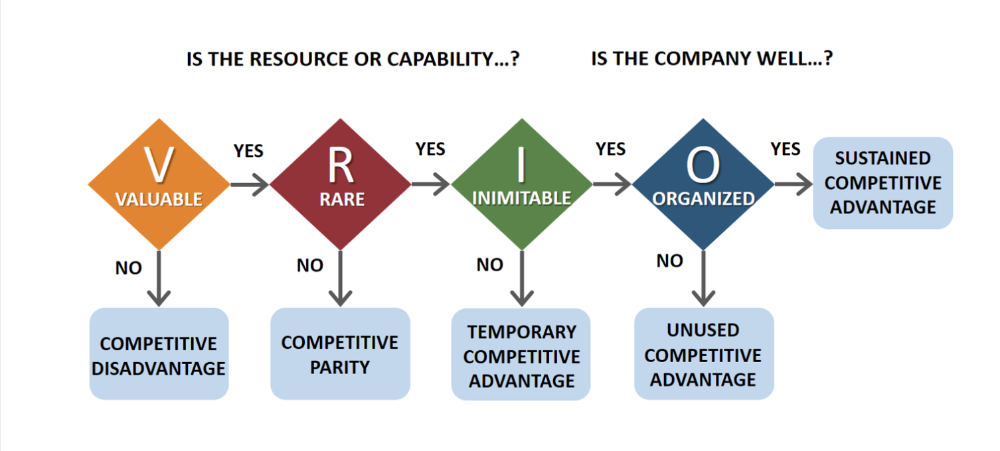
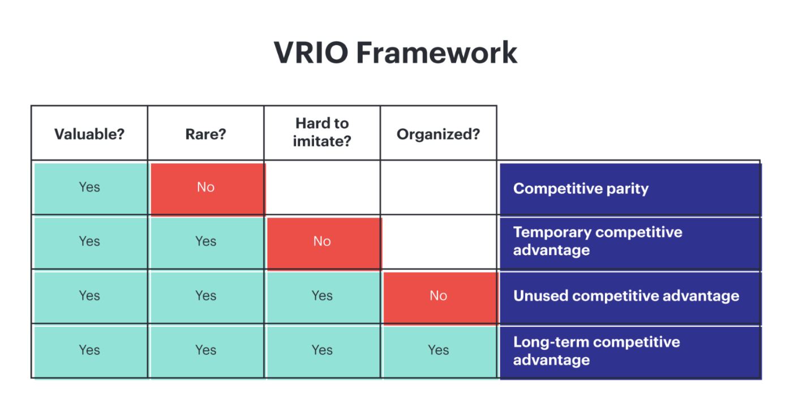

<style>
  p {margin-bottom: 1.5em;}
  li {margin-bottom: 1em;}
  ol {margin-bottom: 1.5em; margin-left: 2em;}
  div {margin-bottom: 1.5em;}
</style>

<article id="module3" class="active">
  <h2>Module 3: VRIO Framework </h2>

  <p>
    The VRIO Framework is a strategic tool used to evaluate a firm’s internal resources and determine which ones can offer a sustainable competitive advantage. This framework helps companies evaluate whether a specific resource or capability can contribute meaningfully to their success (Jugdev, 2004).
  </p>
  
  <p>
    VRIO stands for:
  </p>
  
  <ul style="margin-left: 2em;">
    <li><strong>Valuable:</strong> Does the resource allow the company to improve efficiency or effectiveness?</li>
    <li><strong>Rare:</strong> Is the resource uncommon or unique within the industry?</li>
    <li><strong>Inimitable:</strong> Is it difficult for competitors to copy or acquire the resource?</li>
    <li><strong>Organized:</strong> Is the company structured and managed in a way that allows it to fully use the resource?</li>
  </ul>
  
  

  <p>
    If a resource meets all four criteria, it can be a long-term driver of success, helping firms outperform competitors consistently. Examples include proprietary technology, a well-known brand, efficient processes, or a strong organizational culture (Azevedo et al., 2022).
  </p>

  
  <p>This diagram shows how different combinations of VRIO attributes lead to varying levels of competitive advantage, from parity to long-term advantage.</p>
  <p>
    RBT argues that what sets organizations apart is not just the environment they operate in, but the internal resources and capabilities they develop and deploy (Svejvig &amp; Schlichter, 2021). Moreover, it provides the theoretical foundation, and VRIO offers a practical way to apply it by asking targeted questions about the firm’s capabilities (Jugdev, 2004).
  </p>
  
  <p>
    By applying the VRIO framework, businesses can prioritize internal strengths, analyze resources, and make more informed strategic decisions (Ghapanchi et al., 2014). It encourages a deeper understanding of how internal capabilities align with goals and helps firms focus on what truly sets them apart (Ghapanchi et al., 2014).
  </p>

  <h3>Quiz</h3>
  <p>Answer the following questions to complete this module.</p>

  <form id="quiz-form">
    <div>
      <p><strong>1. What is the purpose of the VRIO Framework in strategic management?</strong></p>
      <label><input type="radio" name="q1" value="a"> A) To analyze external market trends and customer demands.</label><br>
      <label><input type="radio" name="q1" value="b"> B) To assess employee satisfaction and turnover rates.</label><br>
      <label><input type="radio" name="q1" value="c"> C) To predict financial outcomes based on economic conditions.</label><br>
      <label><input type="radio" name="q1" value="d"> D) To evaluate internal resources for sustainable competitive advantage.</label><br>
      <span id="feedback-q1"></span>
    </div>

    <div>
      <p><strong>2. Which of the following correctly matches the components of the VRIO acronym?</strong></p>
      <label><input type="radio" name="q2" value="a"> A) Valuable, Reliable, Innovative, Optimized</label><br>
      <label><input type="radio" name="q2" value="b"> B) Valuable, Rare, Inimitable, Organized</label><br>
      <label><input type="radio" name="q2" value="c"> C) Versatile, Rare, Identifiable, Optimized</label><br>
      <label><input type="radio" name="q2" value="d"> D) Variable, Reactive, Integrated, Original</label><br>
      <span id="feedback-q2"></span>
    </div>

    <div>
      <p><strong>3. A company has developed an efficient internal communication system that improves project turnaround time and is used across the industry. According to the VRIO framework, how would this resource most likely be classified?</strong></p>
      <label><input type="radio" name="q3" value="a"> A) Valuable and rare, resulting in sustained competitive advantage</label><br>
      <label><input type="radio" name="q3" value="b"> B) Valuable but not rare, resulting in competitive parity</label><br>
      <label><input type="radio" name="q3" value="c"> C) Inimitable and organized, resulting in temporary advantage</label><br>
      <label><input type="radio" name="q3" value="d"> D) Rare and organized, resulting in no competitive advantage</label><br>
      <span id="feedback-q3"></span>
    </div>

    <button type="button" onclick="checkQuiz(3)">Submit Quiz</button>
    <button onclick="resetQuiz(1)">Retry Quiz</button>
  </form>
    <button onclick="completeModule('module3')">Complete Module</button>
  </article>
  